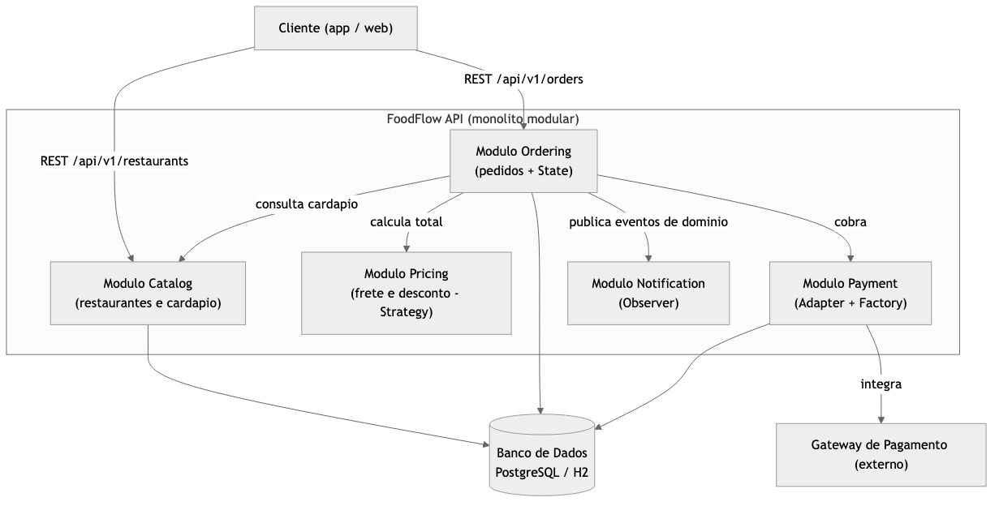
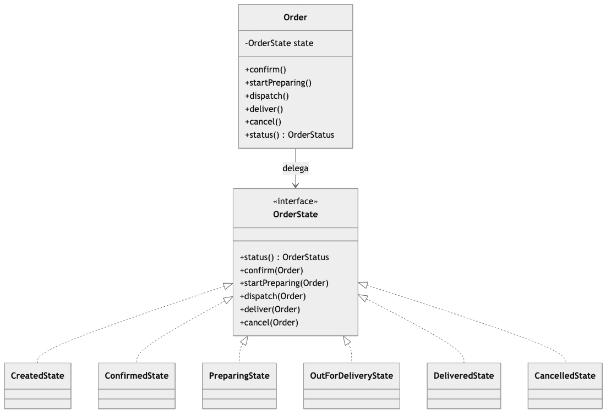
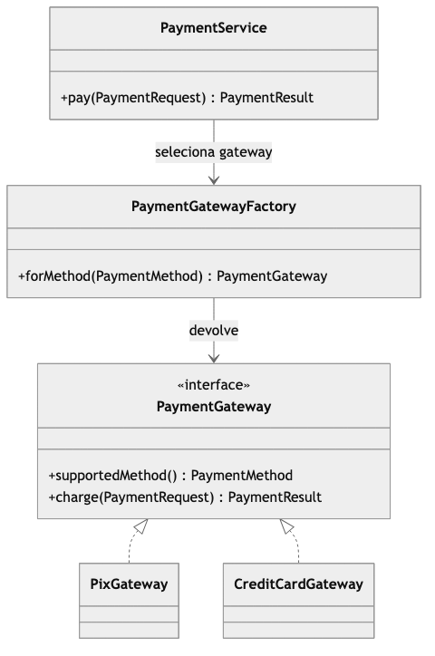
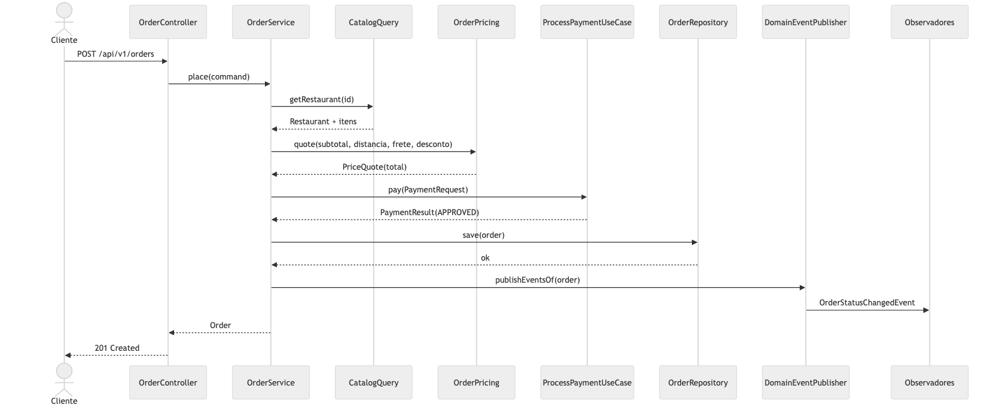

O FoodFlow é uma plataforma de delivery. Restaurantes publicam seu cardápio, clientes montam um pedido, o sistema calcula o total, cobra o pagamento e acompanha o pedido do momento em que é feito até a entrega. O escopo foi delimitado de propósito a esse núcleo, porque ele já reúne os problemas que interessam à disciplina: um fluxo que atravessa vários contextos, regras de negócio com estado, integração com serviços externos e uma API pública.
A justificativa para o tema é que um pedido de delivery concentra, num único caso de uso, decisões que normalmente viram um amontoado de condicionais: checar o cardápio, somar itens, aplicar frete e desconto, cobrar, controlar em que ponto o pedido está e avisar os interessados. É exatamente o tipo de problema em que arquitetura e padrões de projeto deixam de ser teoria e passam a pagar a conta.
O objetivo geral é construir um software funcional que demonstre, de forma verificável no código, os conceitos centrais da disciplina. Os objetivos específicos são:
O problema que o sistema resolve é coordenar, de forma confiável, o ciclo de um pedido de delivery entre cliente, restaurante e pagamento. O público-alvo são os clientes, que fazem e acompanham pedidos, e os restaurantes, que mantêm o cardápio e veem os pedidos chegarem. A API é o ponto de entrada para um aplicativo ou site que consuma esses dados.
À luz da ISO/IEC 25010:2023, três atributos foram tratados como prioritários. A escolha não é genérica: ela reflete o que mais pesa neste sistema e no contexto de uma equipe de estudantes com prazo curto.
É o atributo mais importante aqui. O trabalho existe para demonstrar arquitetura e boas práticas, e a equipe vai evoluir o código ao longo do semestre. Um sistema difícil de mudar inviabilizaria tanto o aprendizado quanto a entrega. As decisões que respondem a isso são a divisão em módulos com fronteiras explícitas, a organização interna em Clean Architecture (domínio sem framework) e a inversão de dependência via portas. Como métrica observável, mantivemos uma suíte de 29 testes automatizados e o domínio testável sem subir o Spring, o que permite verificar regras de negócio em milissegundos.
Um pedido não pode pular etapas nem ser cobrado duas vezes. Escolhemos confiabilidade no lugar de, por exemplo, usabilidade, porque a corretude do fluxo é o que dá credibilidade a uma plataforma de delivery. As decisões que respondem a isso são a máquina de estados do pedido, que rejeita qualquer transição inválida, e a idempotência da cobrança por chave. Como métrica, toda transição inválida resulta em erro de negócio explícito (HTTP 409), e a mesma chave de idempotência nunca gera duas cobranças, o que é coberto por teste.
O caminho de criar um pedido deve ser curto e previsível. As decisões que respondem a isso são a paginação obrigatória nas listagens e a saída das notificações do caminho da requisição, processadas por eventos de domínio. Como alvo observável, definimos uma latência de referência abaixo de 300 ms (p95) para a criação de um pedido no ambiente local e respostas de listagem limitadas pelo tamanho de página.
As decisões estão registradas na pasta /adrs do repositório, no
formato canônico de Michael Nygard (status, contexto, decisão e consequências).
São sete ADRs:
| ADR | Decisão | Status |
|---|---|---|
| 001 | Monólito modular em vez de microsserviços | Accepted |
| 002 | Clean Architecture / Hexagonal por módulo | Accepted |
| 003 | PostgreSQL em produção, H2 em dev e testes | Accepted |
| 004 | Status do pedido como enum + switch | Superseded por 005 |
| 005 | Padrão State para o ciclo de vida do pedido | Accepted |
| 006 | Comunicação entre módulos por eventos de domínio | Accepted |
| 007 | REST + OpenAPI com versionamento por URL | Accepted |
A dupla ADR-004 e ADR-005 registra uma decisão revertida durante o
desenvolvimento. A primeira modelagem do status do pedido usava um enum
com switch espalhado pelos serviços. Na prática isso espalhou a regra
de transição, baixou a coesão e violava o princípio Aberto/Fechado, então a
decisão foi substituída pelo padrão State.
O sistema é um monólito modular: um único artefato para subir, dividido internamente em módulos com fronteiras explícitas. A escolha foi deliberada e está ligada aos atributos da seção 2A e à maturidade da equipe.
Microsserviços resolveriam um problema que não temos: escala independente por serviço. Em troca, cobrariam um preço alto em complexidade operacional (deploys separados, comunicação por rede, consistência distribuída, observabilidade). Para uma equipe de estudantes com prazo curto, e priorizando manutenibilidade e confiabilidade, esse preço não se paga. O monólito ainda nos dá transações locais ACID no fluxo de pedido, que é onde mais precisamos de consistência. A modularidade preserva o caminho de evolução: como cada módulo já conversa por portas, um deles pode ser extraído para um serviço se um dia houver essa necessidade.
Dentro do monólito, cada módulo segue Clean Architecture / Hexagonal. A regra é simples: a dependência sempre aponta para dentro, em direção ao domínio. As camadas são:
domain: modelo de domínio puro (entidades, objetos de valor,
eventos, exceções). Sem Spring, sem JPA.application: portas de entrada (port.in, casos de
uso), portas de saída (port.out, repositórios e gateways) e os
serviços que as orquestram.infrastructure: adaptadores que implementam as portas de saída
(entidades JPA, mapeadores, integrações).web: controladores REST e DTOs.Os módulos são shared, catalog, ordering,
pricing, payment e notification. A visão de
containers (C4 nível 2) está na seção 8.
Cada classe tem um motivo para mudar. O cálculo do preço, por exemplo, vive
apenas em OrderPricing, que combina frete e desconto e nada mais. Ele
não conhece persistência, pagamento ou web.
public PriceQuote quote(Money subtotal, double distanceKm,
DeliveryFeeStrategy deliveryFeeStrategy,
DiscountStrategy discountStrategy) {
Money deliveryFee = deliveryFeeStrategy.calculate(subtotal, distanceKm);
Money payable = subtotal.add(deliveryFee);
Money requestedDiscount = discountStrategy.apply(subtotal);
Money discount = requestedDiscount.isGreaterThan(payable) ? payable : requestedDiscount;
return new PriceQuote(subtotal, deliveryFee, payable.subtract(discount));
}O efeito é que uma mudança na regra de preço fica contida nesse ponto, sem risco de respingar em outras partes do sistema.
Adicionar uma nova política de frete não exige tocar em quem calcula o total.
OrderPricing depende da interface DeliveryFeeStrategy;
uma nova política é uma nova classe.
public interface DeliveryFeeStrategy {
Money calculate(Money subtotal, double distanceKm);
}Já existem três implementações (fixa, por distância e grátis acima de um limite)
e nenhuma delas obrigou a alterar OrderPricing. O código fica aberto a
extensão e fechado a modificação.
Qualquer DeliveryFeeStrategy pode ocupar o lugar de outra sem
quebrar o cálculo. FreeAboveThresholdDeliveryFee demonstra isso: ela é
uma estratégia que, quando o subtotal não atinge o limite, delega a outra
estratégia, e o resultado continua sendo um Money válido.
public Money calculate(Money subtotal, double distanceKm) {
if (subtotal.isGreaterThanOrEqual(threshold)) {
return Money.zero();
}
return below.calculate(subtotal, distanceKm);
}O contrato (devolver um valor de frete não negativo) é respeitado por todas as implementações, então elas são intercambiáveis.
Em vez de uma interface gorda de "serviço de catálogo", há portas de entrada pequenas e específicas. O controlador depende só do que usa.
public interface RegisterRestaurantUseCase {
Restaurant register(RegisterRestaurantCommand command);
}
public interface AddMenuItemUseCase {
MenuItem addItem(AddMenuItemCommand command);
}
public interface CatalogQuery {
Restaurant getRestaurant(UUID id);
List<Restaurant> listRestaurants();
}O CatalogService implementa as três, mas cada cliente enxerga apenas
a interface de que precisa. Ninguém fica acoplado a métodos que não usa.
O OrderService orquestra catálogo, preço, pagamento e persistência
dependendo apenas de abstrações. As implementações concretas (adaptadores JPA,
gateways) são injetadas.
public OrderService(CatalogQuery catalog,
ProcessPaymentUseCase payment,
OrderRepository orders,
DomainEventPublisher events) { ... }Nenhuma dessas dependências é uma classe concreta de infraestrutura. O domínio e a aplicação não conhecem JPA nem o gateway de pagamento: eles só conhecem portas.
As práticas de Clean Code aparecem ao longo de todo o código. Alguns exemplos:
Os métodos do pedido dizem o que fazem no vocabulário do domínio:
order.confirm(), order.startPreparing(),
order.dispatch(), order.deliver(),
order.cancel(). Não há setStatus(int) nem flags soltas.
As operações de Money são curtas e fazem uma coisa só, o que torna o
tipo previsível e fácil de testar:
public Money add(Money other) {
requireSameCurrency(other);
return new Money(amount.add(other.amount), currency);
}Toda aritmética monetária passa por Money. Nenhum serviço soma
BigDecimal solto ou repete a regra de arredondamento; isso fica em um
único lugar, junto com a proteção contra somar moedas diferentes.
O agregado não deixa o estado vazar. A lista de itens do pedido é devolvida como somente leitura, e a única forma de mudar o status é pelos métodos de transição:
public List<OrderItem> items() {
return Collections.unmodifiableList(items);
}Erros de negócio têm uma hierarquia própria (DomainException,
BusinessRuleException, EntityNotFoundException) e são
traduzidos para HTTP em um único lugar, no formato Problem Details. Os controladores
não repetem tratamento de erro.
Os poucos comentários existentes explicam decisões, não o óbvio. Por exemplo, no adaptador de persistência do pedido:
// Itens do pedido nao mudam apos a criacao; atualizar so o status evita duplicar linhas.Foram aplicados cinco padrões GoF, cada um motivado por um problema concreto do sistema. Abaixo, os quatro mais relevantes.
Problema: o pedido passa por vários estados e cada operação só é
válida em alguns deles. A primeira versão usava enum + switch
e a regra de transição se espalhou (ver ADR-004/005).
Solução: uma interface OrderState cujas transições,
por padrão, rejeitam a operação; cada estado concreto sobrescreve apenas as
transições válidas. O Order delega ao estado atual.
public interface OrderState {
OrderStatus status();
default void confirm(Order order) { throw illegalTransition("confirmar"); }
default void dispatch(Order order) { throw illegalTransition("despachar"); }
// ...
}
final class CreatedState implements OrderState {
public void confirm(Order order) { order.transitionTo(ConfirmedState.INSTANCE); }
public void cancel(Order order) { order.transitionTo(CancelledState.INSTANCE); }
}Análise crítica: o benefício é grande: cada estado fica coeso, transições inválidas são barradas por padrão e adicionar um estado é criar uma classe, sem tocar nas demais. O custo é o número maior de classes (uma por estado) e a necessidade de reconstruir o estado a partir do status persistido. Vale a pena pela clareza e segurança.
Problema: frete e desconto têm várias políticas, e elas mudam com frequência (promoções, mudanças de tarifa).
Solução: interfaces DeliveryFeeStrategy e
DiscountStrategy, com implementações intercambiáveis, combinadas por
OrderPricing (código na seção 4).
Análise crítica: o ganho é poder trocar ou somar políticas sem mexer no cálculo do total, e testar cada política isoladamente. O custo é uma classe por política e a necessidade de decidir, em algum ponto, qual estratégia usar. Esse ponto de decisão ficou contido no serviço de pedido.
Problema: cada forma de pagamento integra com um provedor diferente, e o serviço de pedido não deveria conhecer esses detalhes.
Solução: uma porta PaymentGateway com um Adapter por
provedor (Pix, cartão), e uma Factory que escolhe o adapter conforme a forma de
pagamento. A Factory recebe todos os gateways e os indexa pelo método que cada um
declara suportar.
public PaymentGatewayFactory(List<PaymentGateway> gateways) {
this.gatewaysByMethod = new EnumMap<>(PaymentMethod.class);
for (PaymentGateway gateway : gateways) {
gatewaysByMethod.put(gateway.supportedMethod(), gateway);
}
}
public PaymentGateway forMethod(PaymentMethod method) {
PaymentGateway gateway = gatewaysByMethod.get(method);
if (gateway == null) throw new BusinessRuleException("Forma de pagamento nao suportada: " + method);
return gateway;
}Análise crítica: registrar um novo provedor passa a ser apenas adicionar um bean, sem tocar na Factory nem no serviço (OCP). O custo é uma camada de indireção a mais e a responsabilidade de garantir que cada gateway declare corretamente o método que atende.
Problema: quando o pedido muda de status, vários interessados precisam reagir (cliente, restaurante, métricas), e o módulo de pedidos não deveria conhecê-los.
Solução: o agregado registra eventos de domínio; um
DomainEventPublisher os publica via Spring; observadores reagem com
@EventListener.
@Component
class RestaurantNotifier {
@EventListener
void onStatusChanged(OrderStatusChangedEvent event) {
if (event.newStatus() == OrderStatus.CONFIRMED) {
log.info("Notificando restaurante: novo pedido {}", event.orderId());
}
}
}Análise crítica: o desacoplamento é real: novos canais de notificação não tocam no módulo de pedidos. O custo é que o fluxo fica menos explícito (a reação acontece via evento) e, como os eventos saem após a persistência, garantias mais fortes pediriam listeners transacionais ou um padrão outbox em uma próxima iteração.
O sistema expõe uma API REST, escolhida por ser o estilo mais comum para esse
tipo de integração e por ter ferramentas maduras de especificação e teste. O
contrato completo está em /api/openapi.yaml (OpenAPI 3.0.3).
/api/v1. Uma mudança incompatível futura iria para
/api/v2 (ADR-007).status, title e detail; erros de
validação incluem um mapa errors por campo.page e
size e respondem no envelope PageResponse.{
"title": "Requisicao invalida",
"status": 400,
"detail": "Um ou mais campos sao invalidos",
"errors": { "items": "must not be empty", "customerId": "must not be blank" }
}| Método | Caminho | Descrição |
|---|---|---|
| GET/POST | /api/v1/restaurants | Lista e cadastra restaurantes |
| POST | /api/v1/restaurants/{id}/menu-items | Adiciona item ao cardápio |
| POST | /api/v1/orders | Cria um pedido |
| GET | /api/v1/orders | Lista pedidos (paginado) |
| POST | /api/v1/orders/{id}/transitions | Avança ou cancela o pedido |
Os diagramas estão versionados como código (Mermaid) na pasta
/diagrams e refletem o código implementado.

Figura 1. Módulos do monólito e suas dependências.

Figura 2. O ciclo de vida do pedido com o padrão State.

Figura 3. Seleção do gateway de pagamento (Adapter + Factory).

Figura 4. Sequência do caso de uso central, criar um pedido.
O resultado é um sistema que funciona de ponta a ponta e em que cada conceito da disciplina tem um ponto concreto no código. A divisão em módulos com Clean Architecture deixou o domínio testável sem framework, e os padrões GoF não entraram por enfeite: cada um resolveu um problema que tínhamos. O State, em especial, nasceu de uma dor real, registrada na reversão da ADR-004 para a ADR-005.
Avaliando criticamente, a separação entre domínio e persistência cobrou o preço esperado em mapeadores e classes a mais, mas pagou em clareza: mudar uma regra de preço ou adicionar um estado ficou previsível e local. A máquina de estados e a idempotência deram ao fluxo a confiabilidade que era o segundo atributo prioritário.
As limitações são conhecidas. Os gateways de pagamento são simulados; os eventos de domínio são publicados após a persistência, sem um outbox que garanta entrega; e o esquema do banco é gerado pelo Hibernate, sem migrações versionadas. Numa próxima iteração, adotaríamos Flyway para as migrações, um outbox transacional para os eventos e testes de contrato sobre o OpenAPI. Se fôssemos recomeçar, manteríamos o monólito modular, que se mostrou a escolha certa para o tamanho da equipe, e investiríamos mais cedo em testes de integração da camada web.
/adrs: os sete ADRs em arquivos Markdown./diagrams: as fontes dos diagramas em Mermaid./api: a especificação OpenAPI 3.x.README.md: instruções de instalação e execução.